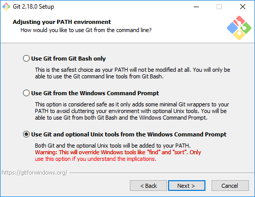

Zoznám sa s Pythonom
Na tejto prezentácii si povieme zopár slov o jazyku Python a ukážeme si, ako naištalujeme Python na systéme Windows 10.
Jazyk Python
- Python je dynamický programovací jazyk.
- Bol vyvinutý holandským programátorom Guidom van Rossum.
- Python je jazyk určený pre všeobecné využitie.
- Prvá verzia Pythonu bola uverejnená v roku 1991.
- Python je veľmi často jazyk prvého kontaktu; nahrádza Pascal ako výukový jazyk na školách.
- Python je multiplatformovým programovacím jazykom. Beží na Linuxe, Mac OS a Windows OS.
- Medzi hlavné ciele jazyka patria produktivita programátora a čitateľnosť kódu.
- Python podporuje tri programovacie paradigmy: procedurálne, objektovo-orientované a funkcionálne programovanie.
- Python je minimalistický jazyk. Nepoužíva ukončovaciu bodkočiarku a namiesto zložených zátvoriek používa medzery.
- Python je open source softvér.
- Python je vyvíjaný veľkou skupinou dobrovoľníkov.
V súčasnosti existujú dve verzie Pythonu: Python 2.x and Python 3.x. Python 3 nie je spätne kompatibilný s verziou Python 2. Nová verzia vznikla preto, aby sa odstránili staré dizajnové chyby.
Nesprávne predstavy o jazyku Python a programovaní
- Základy Pythonu sú jednoduché, ale zvládnuť celý jazyka a doménu je náročné.
- Keď sa naučím programovať v Pythone, nie som/nemusím byť profesionálny programátor. Ináč povedané, Python nie je určený len profesionálnym programátorom.
- Na zvládnutie jazyka Python nie je potrebné PhD. z matematiky.
- Python sa učia deti na školách, sú v ňom však naprogramované veľmi zložité projekty.
Python v praxi
Na Slovensku rastie počet pracovných pozícií, kde sa vyžaduje Python.
- Sekundárny jazyk popri C, C++, Jave
- Automatizácia, buildovanie a administrácia
- Výuka
- Data science
- Webové projekty
- Bezpečnosť, pen testing
- Vnútrofiremné (in-house) aplikácie
Atraktívne oblasti
- Machine learning
- Pen testing/security
Inštalácia Pythonu na Windows OS
Inštalačné verzie jazyka Python 3:
- python-3.7.0.exe -- 32 bit version
- python-3.7.0-amd64.exe -- 64 bit version
Počas inštalácie, potrebujeme zaškrtnúť voľbu Add Python to PATH.
Inštalačné adresáre
- C:\Users\user7\AppData\Local\Programs\Python\Python37 -- 64 bitová verzia
- C:\Users\user7\AppData\Local\Programs\Python\Python37-32 -- 32 bitová verzia
Terminály vo Windows 10
Existujú viaceré terminály/konzoly v operačnom systéme Windows 10:
- Klasické CMD
- Powershell
- Obohatené/vylepšené CMD
Git a Git bash
Voliteľne je možné naištalovať si Git pre Windows, ktorý obsahuje nástroje Git a rôzne pomocné utility známe z Linuxu. Git je distribuovaný systém správy verzií zdrojového kódu.
Git si môžeme nainštalovať na adrese gitforwindows.org/.
Python editory and IDE-čka
- Visual Studio Code
- Atom
- PyCharm
- Iné
Študijné materiály
Knihy:
- Eric Matthes, Python Crash Course
- Luciano Ramalho, Fluent Python
Online materiály:
- Oficiálna dokumentácia, docs.python.org/3/index.html
- Tutoriál zetcode.com/lang/python/
- Stránka Real Python realpython.com
- Python Rosetta Code rosettacode.org/wiki/Category:Python
Video kurzy:
Zadania
V zadaniach budeme pracovať s nasledujúcimi dátami:
The Battle of Thermopylae was fought between an alliance of Greek city-states, led by King Leonidas of Sparta, and the Persian Empire of Xerxes I over the course of three days, during the second Persian invasion of Greece.
Pokús sa vyriešiť nasledovné zadania:
- Zisti verziu Pythonu.
- Zisti verziu operačného systému.
- Zisti dnešný dátum.
- Zisti aktuálny čas.
- Zisti univerzálny čas.
- Zisti aktuálny čas v Moskve, Paríži a Osle.
- Vypíš čísla od 0 po 100 (vrátane).
- Vypíš desať čísiel od 0 po 100 (vrátane) náhodným spôsobom.
- Zoraď nasledovné čísla vzostupne a zostupne (2, 5, 1, 9, 11, 12, 8, 7).
- Vypíš všetky párne čísla od 1 do 100 (vrátane).
- Vypočítaj faktoriál čísiel 3, 5, 10 a 20.
- Vygeneruj náhodným spôsobom 20 čísiel od 1 do 10 vrátane a zisti, koľko krát sa vyskytuje číslo 7.
- Napíš funkciu ktorá reverzne (otočí) zadaný reťazec (napr. 'hello' => 'olleh').
- Napíš funkciu ktorá reverzne (otočí) zadané číslo (napr. 521 => 125).
- Napíš funkciu ktorá vypíše slová z n-tice ('forest', 'wood', 'sky') veľkými písmenami.
- Napíš funckiu isAnagram, ktorá zistí, či dané slovo je anagram iného.
- Napíš funkciu isPalindrome, ktorá zistí, či dané slovo je palindróm iného.
- Nájdi počet samohlások vo vete "Today is a beatiful day".
- Majme n-ticu (3, 5, 2, 1, 8, 9, 12, 11, 7, 6). Vypíš najväčšie minimum, maximum, sumu a počet prvkov v n-tici.
- Majme n-ticu ('Martin', 'Lucy', 'Peter', 'Martin', 'Robert', 'Peter'). Vytvor z nej novú n-ticu bez duplikátov.
- Zaokrúhli výraz 334/5000 na dve a dri desatinné miesta.
- Konvertuj čísla z n-tice (23, 168, 997, 1455, 3999) na rímsku sústavu.
- Načítaj súbor thermopylae.txt a vypíš jeho obsah.
- Skopíruj súbor thermopylae.txt do súboru thermopylae2.txt.
- Zisti veľkosť súboru thermopylae.txt v bajtoch a kilobajtoch.
- Vypýtaj si od užívateľa veľkosť polomeru a vypočítaj obvod a obsah kruhu.
- Zisti počet dní do Vianoc (25.12.).
- Zisti koľko dní ubehlo od bitky pri Borodine.
- Vygeneruj plochý zoznam zo zoznamu zoznamov (napr. [[1, 2], [3, 4], [5, 6], [7]] => [1, 2, 3, 4, 5, 6, 7]).
- Vypíš obsah titulku zo stránky learnpython.pro (zo značky title).
- Vypíš hexadecimálny výstup z malého PNG obrázka. Výstup bude mať desať stĺpcov oddelených medzerou.
- Načítaj súbor thermopylae.txt a zisti počet jeho slov.
- Zašifruj povel 'Full attack at dawn' pomocou cézarovej šifry. Spätne ho potom dekóduj.
- Vytvor jednoduchú webovú aplikáciu pomocou knižnice Flask.
- Vytvor koláčový graf pomocou knižnice matplotlib.
- Vytvor tkinter GUI aplikáciu s jedným tlačidlom. Kliknutím na tlačidlo sa aplikácia ukončí.